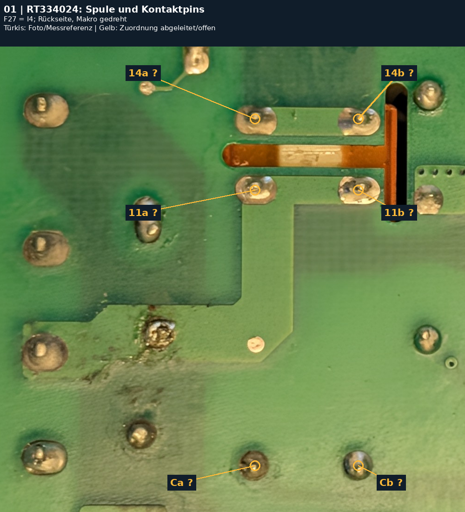
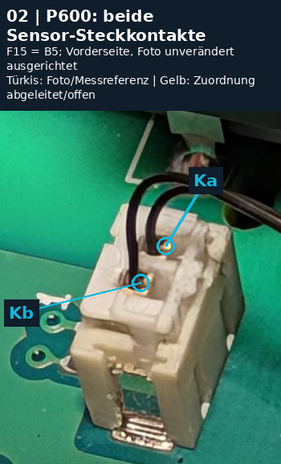
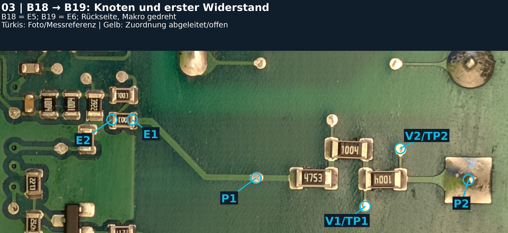
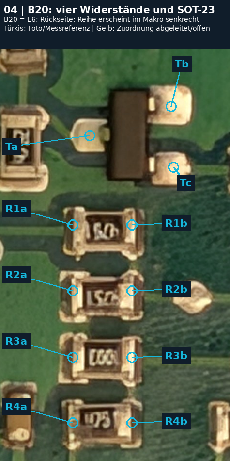
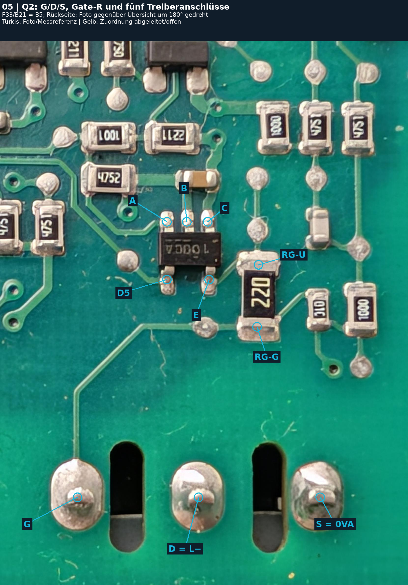
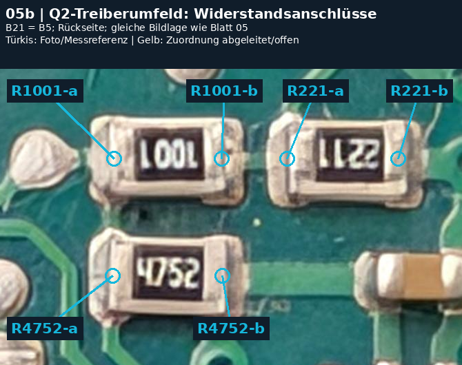
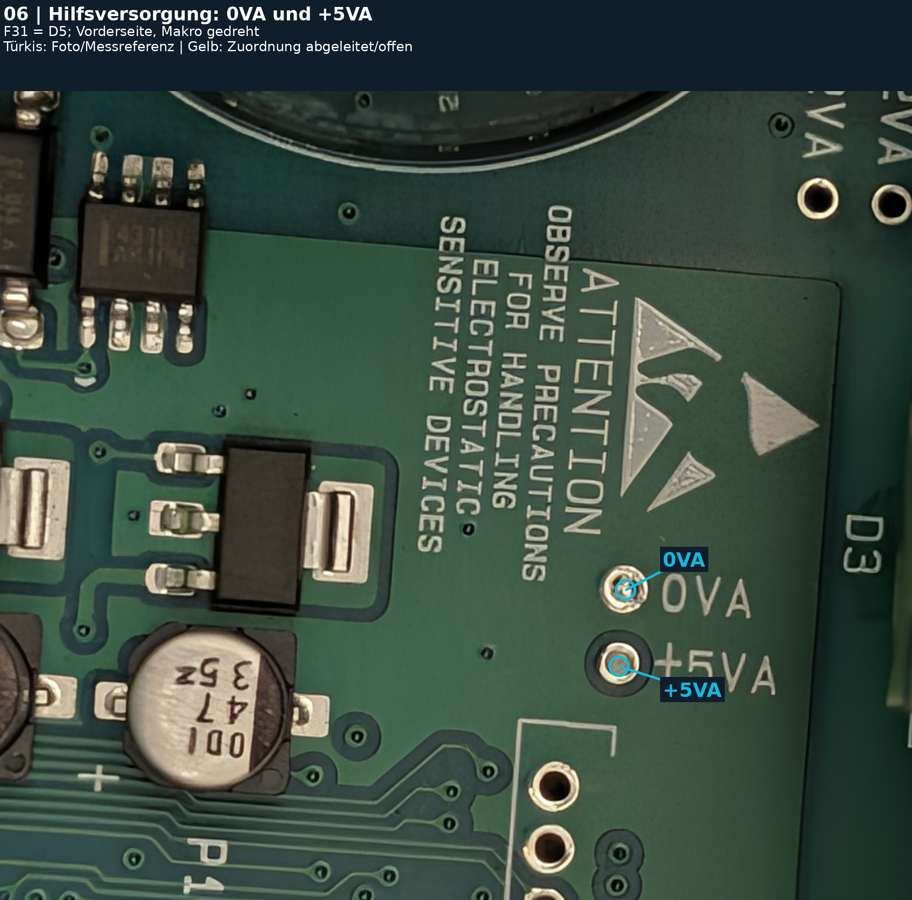
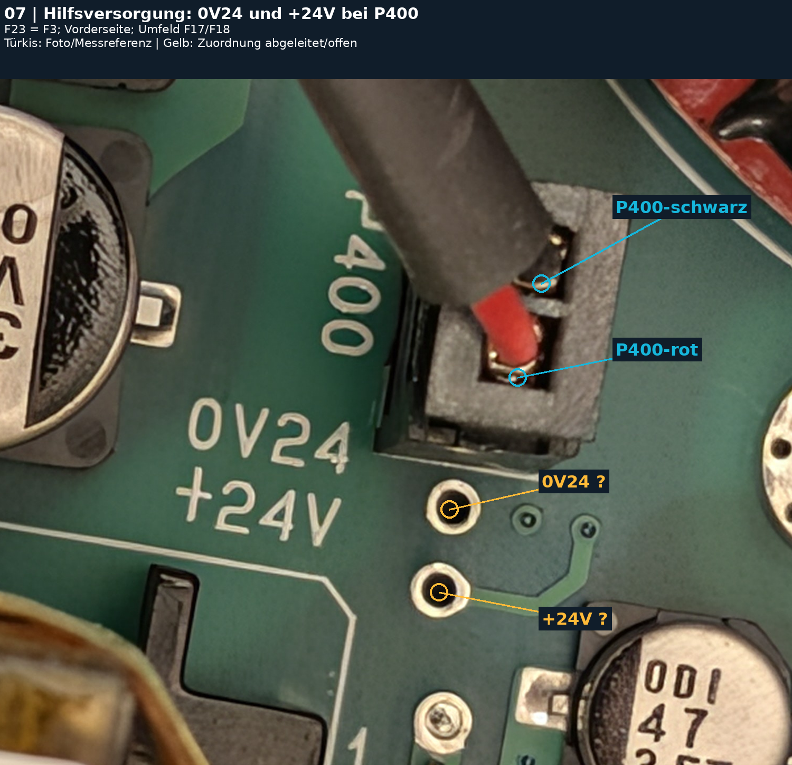

GIRT S6T30
Stromloser Messplan
Originalmakros · Claudes Raster unverändert · 08.11.2026
PDF · Messprotokoll CSV · Vollständiger Bericht · Fotonachweis
- Arbeitsgrundlage
- Repository-Stand 9d1f74617b602f57db36a1993998581de360b832. Zuerst gelesen: docs/STAND_2026-11-08.md, docs/netlist/* und photos/2026-11-08/back_raster_index.csv; danach Übersichts-PDF, HARDWARE.md und Foto-Inventar. Diese Arbeitsgrundlage beschreibt den Planstand vom 08.11.; die Nutzer-Messungen vom 09.11. stehen in den verlinkten Nachträgen.
- Koordinaten unverändert
- Claudes Raster bleibt A–L × 1–6, dasselbe Feld auf beiden Platinenseiten. Variante A: Vorderseite wie fotografiert, Rückseite vertikal gespiegelt. Variante B: Rückseite wie fotografiert, Vorderseite vertikal gespiegelt; Zeilen 6 oben bis 1 unten. Makros werden hier weder gedreht noch gespiegelt. Die Zusatz-IDs identifizieren nur Anschlüsse im jeweiligen Originalmakro. Rasterangaben bleiben grob (laut Quelle etwa ±1 Feld).
- Vor jeder Messung
- Netzstecker ziehen und alle externen Versorgungen trennen. Restspannung direkt am Zwischenkreis-Elko in V DC prüfen; erst nach bestätigtem Wert unter 5 V zu den hier geplanten Ω-/Diodentests wechseln. Nur spannungsfrei messen; vorhandene Anschlüsse nicht brücken. DC MOTOR für vergleichbare Leistungsteilwerte abgezogen lassen (B10-M22). Sensor für NTC-01/02 abziehen. Steckzustände protokollieren. 0VA = Netzseite/DC−, kein Schutzleiter.
- Messwerte richtig lesen
- Prüfspitzen kurzschließen und Eigenwiderstand notieren (bisher 0,2–0,4 Ω). Ω-Werte samt Zeitverlauf und Polung erfassen; 10/60 s sind nur Ablesezeiten, kein Beweis für Einschwingen. Bei weiterem Trend bis zum erkennbaren Endwert beobachten oder ausdrücklich „nicht eingeschwungen“ eintragen. Bei hoher Impedanz kein Kontakt mit Fingern. Diodenmessung: Rot ist positive Prüfspitze. Keine pauschalen Gut-/Schlechtgrenzen für unbekannte In-Circuit-Netze.
- Reihenfolge aus dem Stand
- 1 Relais F27; 2 NTC F15; 3 B19/B20 fotografieren und sichtbaren B18-Pfad prüfen; 4 Q2-Treiber reinigen/lesen und Pins zu Referenzen kartieren; 5 Hilfsversorgung, Elkos und Lötstellen. B10 und Q2 nicht wegen alter Zwischenhypothesen erneut als defekt behandeln. Klickvergleich beim Gut-/Fehlstart und andere Betriebsmessungen gehören nicht zu diesem stromlosen Plan.
- Status
- Türkis F/M: Kontakt sichtbar bzw. vorhandene Messreferenz; der Marker ist keine neue elektrische Bestätigung. Gelb I/?: aus Pinraster/Aufdruck abgeleitete Zuordnung, zuerst durchmessen. H: Funktion oder Sollwertmodell offen. Neue Ergebnisfelder bleiben leer. Die Originalfotos wurden nur gelesen; PNGs enthalten Ausschnitte mit Overlays und Kopfzeile, ohne erzeugte Platineninhalte.
Blatt 01 · RT334024: Spule und Kontaktpins
F27 = I4; Rückseite, Makro gedreht
- Messmodus
- RLY-01: Ω Ca–Cb, beide Richtungen. RLY-02/03: Ω 11a–11b / 14a–14b. RLY-04: Ω 11a–14a, beide Richtungen; nichts bestromen.
- Bisher
- Keine Spulen- oder Kontaktmesswerte dokumentiert. Laut HARDWARE.md wurden Relais-/Umfeldlötstellen bereits nachgelötet; Fehler kam zurück.
- Erwartung
- Spule allein 1,44 kΩ bei 23 °C, ±10 % (1,296–1,584 kΩ); in-circuit können Diode/Ansteuerung den Wert senken oder polungsabhängig machen. 11a–11b und 14a–14b etwa Spitzenwiderstand (bisher 0,2–0,4 Ω).
- Grenze / Zuordnung
- I = aus Gehäuselage, Sechspin-Geometrie und Hersteller-Bottom-View abgeleitet, noch nicht elektrisch bestätigt. Spulenpaar und Kontakt-Doppelpaare zuerst prüfen. Schließer allein unbestromt OL; eingelötet können Parallelpfade endliche Werte ergeben. Kein sicherer 68-Ω-Pfad belegt. Statisch lässt sich das Schließen unter Last nicht beurteilen.
Original: photos/2026-11-08/back/PXL_20261108_154119736.jpg
Ausschnitt (900, 1150, 1900, 2150); keine Drehung oder Spiegelung.
Blatt 02 · P600: beide Sensor-Steckkontakte
F15 = B5; Vorderseite, Foto unverändert ausgerichtet
- Messmodus
- NTC-01/02: Sensorstecker von P600 abziehen; Ω direkt zwischen den zwei markierten kabelseitigen Crimpkontakten. Kalt, dann mit Handwärme, danach bei gleichbleibender Temperatur Leitung/Stecker vorsichtig bewegen. NTC-03: wieder gesteckt, Ω zwischen denselben Kontakten; Vergleich nur mit eigenem gesteckten Ausgangswert.
- Bisher
- HARDWARE.md §2: NTC 10 kΩ; gemessen ca. 11 kΩ bei Raumtemperatur, 10,75 kΩ erwärmt. Temperaturen und damaliger Steckzustand fehlen.
- Erwartung
- Abgezogen bei ähnlicher Temperatur grob 10–11 kΩ, kein harter Toleranztest. Bei Erwärmung gleichmäßig fallend. Bei konstantem Temperaturzustand keine Sprünge/OL durch Kabelbewegung. Gesteckt können Parallelpfade den Absolutwert ändern.
- Grenze / Zuordnung
- Ka/Kb sind lokale Fotobezeichnungen, keine behaupteten P600-Pinnummern; NTC ist unpolar. Foto zeigt den Stecker gesteckt. Markiert ist das sichtbare Kontaktmetall, nicht Kunststoff. Die abgezogene Steckansicht ist nicht im Repository vorhanden. Eine schlechte Buchsen-Lötstelle kann beim Messen nur auf der Kabelseite unentdeckt bleiben; deshalb zusätzlich Lötstellen ansehen, nicht durch einen stabilen Sensortest freigeben.
Original: photos/2026-11-08/q2/q2_vorderseite_makro.jpg
Ausschnitt (670, 750, 1020, 1190); keine Drehung oder Spiegelung.
Blatt 03 · B18 → B19: Knoten und erster Widerstand
B18 = E5; B19 = E6; Rückseite, Makro gedreht
- Messmodus / Stand
- Ω, stromlos, in-circuit. Nachtrag 09.11.2026: Blatt 03 im geprüften Umfang abgeschlossen; nächste Messungen auf Blatt 04 (B20). Alle Einzelwerte, Polungen und Grenzen: B19_ERGEBNISSE_2026-11-09.md und ausgefüllte Ergebnis-CSV.
- Ergebnisse
- P1–E1 0,4 Ω. E1–E2 zuerst 97,6 kΩ, erneut 102,6/90,4 kΩ; benachbarter 1003 gleich. 3922: 38,43/38,91 kΩ. Beide B19-1004 parallel bestätigt: 498/496 kΩ. 4750: 478 Ω beidseitig (korrigierte Einheit). P2–0VA bis 6 MΩ steigend, dann fallend; Endwert offen.
- Korrektur / Zuordnung
- E1–E2 trägt 1003 = 100 kΩ; der frühere 1-kΩ-Planwert war ein Lesefehler. E2 = Pad A; A zum oberen linken 1003, dessen unteres Ende = Pad B: je 0 Ω. B–L4981AD Pin 14 (VFEED): 0 Ω. Rechte Kappe 3922 und linke Kappe 4750: je 0 Ω zu 0VA. C–0VA: 478 Ω.
- Erwartung / Grenzen
- Nominalmodell: L+ über 1 MΩ + 1 MΩ + 475 kΩ + 100 kΩ + 100 kΩ zu B; 39,2 kΩ von B nach 0VA. Widerstands-Codes sind keine isolierten Einzelmessungen. B19-1004-Einbindung und C-Weiterweg offen. Verschmutzungsleck möglich, nicht nachgewiesen. Kein verursachender Bauteildefekt belegt.
Original: photos/2026-11-08/back/PXL_20261108_153921371.jpg
Ausschnitt (1150, 700, 4080, 1750); keine Drehung oder Spiegelung.
Blatt 04 · B20: vier Widerstände und SOT-23
B20 = E6; Rückseite; Reihe erscheint im Makro senkrecht
Neue Originalaufnahme ohne EXIF · Ergebnisbericht
- Messmodus / Stand
- Nachtrag 09.11.2026: Blatt 04 im geprüften stromlosen Umfang abgeschlossen. Nächstes Blatt 05 (Q2-Treiber). Alle Einzelwerte und Grenzen: B20_ERGEBNISSE_2026-11-09.md; neue Aufnahme: photos/2026-11-09/b20/50370.jpg.
- Widerstände
- R1 4751 / 4,75 kΩ: 4,6 kΩ beidseitig. R2 4751 / 4,75 kΩ: a→b 2,7 kΩ, b→a 3,3 kΩ. R3 1003 / 100 kΩ: 72,3 kΩ beidseitig. R4: 4,77 kΩ beidseitig; Code unvollständig lesbar. In-circuit keine isolierte Toleranzprüfung.
- SOT-23
- Diodenmodus Ta→Tb 1,13 V, zurück 0,70 V; Ta→Tc 2,38/0,68 V; Tb→Tc 1,94/0,69 V. Ω gegen 0VA: Ta 20,5 kΩ, Tb 0 Ω, Tc 14,8 kΩ, jeweils beide Richtungen. Gegen +5VA: Ta 23,1 kΩ, Tc 12,2 kΩ, beidseitig. Tb = 0VA bestätigt; Typ und Funktion offen.
- Zuordnung / Grenzen
- Ursprüngliche a/b-Bezeichnungen bleiben erhalten. Neues Foto: R1–R4 links nach rechts; a unten, b oben; Ta unten einzeln, Tb oben links, Tc oben rechts. Die frühere umgekehrte Chatbeschreibung war falsch. Achtpolige ICs als TL082I lesbar. Keine direkte +5VA-Verbindung und kein eindeutiger Defektbefund.
Original: photos/2026-11-08/back/PXL_20261108_153921371.jpg
Ausschnitt (1300, 1500, 1775, 2350); keine Drehung oder Spiegelung.
Blatt 05 · Q2: G/D/S, Gate-R und fünf Treiberanschlüsse
F33/B21 = B5; Rückseite; Foto gegenüber Übersicht um 180° gedreht
Ergebnisbericht und Korrekturen · Neues Originalmakro ohne EXIF
- Stand / Gatepfad
- 09.11.2026: im vorgesehenen stromlosen Umfang abgearbeitet. G–RG-G 0 Ω; Gatewiderstandspfad 22,2 Ω. G–S 9,14 kΩ beidseitig. G–D 2,2 MΩ, rückwärts 1,86 MΩ langsam steigend, kein Endwert. S→D: Referenz 0,444 V / OL unverändert bestätigt.
- Bestätigte Knoten
- B–0VA 0 Ω beidseitig; Diodentest korrigiert 0,0 V. E–RG-U ≈0 Ω ausdrücklich bestätigt: Gate-Ansteuerpfad elektrisch belegt. E–0VA 9,16 kΩ passt zu G–S plus 22,2 Ω. Keine direkte +5VA-Verbindung des Treibers belegt.
- Matrix / Grenzen
- A/B/C/D5/E gegen 0VA und +5VA in Ω und Diode erfasst; komplette Matrix und Rohkorrekturen: Q2_TREIBER_ERGEBNISSE_2026-11-09.md. Nutzer liest Aufdruck 1000CA; Typ, Herstellerpinout, Versorgung und Freigabe bleiben offen. Statische Werte beweisen keine Betriebsschaltung.
Original: photos/2026-11-08/q2/q2_rueckseite_makro.jpg
Ausschnitt (0, 0, 1661, 2212); keine Drehung oder Spiegelung.
Blatt 05b · Q2-Treiberumfeld: Widerstandsanschlüsse
B21 = B5; Rückseite; gleiche Bildlage wie Blatt 05
Ergebnisbericht und Korrekturen · Neues Originalmakro ohne EXIF
- Stand / Messmodus
- 09.11.2026: Ω zwischen den bestehenden a/b-Endkappen, beide Richtungen, stromlos in-circuit. Blätter 05/05b gemeinsam abgearbeitet; nächste Prüfungen Blatt 06 Hilfsversorgung. Vollständiger Ergebnisbericht: Q2_TREIBER_ERGEBNISSE_2026-11-09.md.
- Ergebnisse / Korrektur
- R1001: 979/977 Ω; anfängliche kΩ-Einheit ausdrücklich korrigiert. Bisherige Foto-ID R221: tatsächlicher Code 2211 = 2,21 kΩ, gemessen 2,09 kΩ beidseitig. Früherer 220-Ω-Sollwert war ein Lesefehler. R4752: 4,16 kΩ beidseitig bei Code 4752 = 47,5 kΩ.
- Zuordnung / Grenzen
- Alias R2211 ergänzt die alte Foto-ID R221; a/b-Pixel unverändert. Eingelötete Werte können durch Parallelpfade niedriger sein. Kein eindeutiger Einzelwiderstandsdefekt nachgewiesen. Neues Originalmakro 50386.jpg ohne EXIF gesichert; keine generierten Platineninhalte.
Original: photos/2026-11-08/q2/q2_rueckseite_makro.jpg
Ausschnitt (200, 260, 870, 690); keine Drehung oder Spiegelung.
Blatt 06 · Hilfsversorgung: 0VA und +5VA
F31 = D5; Vorderseite, Makro gedreht
Ergebnisse und Testgrenzen
- Stand / Messmodus
- 09.11.2026: Ω rot 0VA, schwarz +5VA, dann umgepolt; stromlos in-circuit. SUP-01: 2,18 kΩ / 2,57 kΩ. Exakt gleicher Vergleich wie zuvor am Q2-Treiberkontakt B (=0VA). Zeitverlauf und Temperatur nicht mitgeteilt.
- Erwartung / Ergebnis
- Historische Referenz 2,16/2,55 kΩ nahe. Kein neuer niederohmiger Kurzschlussbefund aus diesen Anzeigen. Ω bestimmt weder Spannung unter Last noch ESR/Kapazität oder Reglerfunktion.
- Zuordnung / Grenzen
- 0V24–0VA inzwischen mit 0 Ω beidseitig im geprüften Steckzustand bestätigt (Blatt 07). 0VISO bleibt ungeprüft. Sichtprüfung der Regler-/Elko-Lötstellen nicht als neu durchgeführt verbuchen. Ergebnisbericht: HILFSVERSORGUNG_ERGEBNISSE_2026-11-09.md.
Original: photos/2026-11-08/front/PXL_20261108_155115274.jpg
Ausschnitt (0, 1200, 2100, 3064); keine Drehung oder Spiegelung.
Blatt 07 · Hilfsversorgung: 0V24 und +24V bei P400
F23 = F3; Vorderseite; Umfeld F17/F18
Ergebnisse und Testgrenzen
- Stand / Steckzustand
- 09.11.2026: Nutzer bestätigt P400 als Anschluss des Gehäuselüfters; Lüfter gesteckt. Gemessen an den als 0V24/+24V bezeichneten Punkten direkt daneben. Einzelne Testloch–Steckkontakt-Paare SUP-02a/b nicht separat berichtet.
- Ergebnisse / Polung
- SUP-03: Rot 0V24, Schwarz +24V: 37,49 kΩ; umgepolt 47,5 kΩ. Das ist die umgekehrte Reihenfolge zur ursprünglichen Vorlage. SUP-04: 0V24–0VA 0 Ω in beiden Richtungen. Zeitverlauf/Temperatur nicht mitgeteilt.
- Einordnung / Grenzen
- Massebezüge im geprüften Steckzustand niederohmig verbunden; physischer Verbindungsweg offen. Kein Trennungsnachweis. 24-V-Werte enthalten mögliche Lüfterpfade, kein bekannter Ω-Sollwert und kein Nachweis funktionierender Versorgung. Relaisanbindung und ESR offen. Bericht: HILFSVERSORGUNG_ERGEBNISSE_2026-11-09.md.
Original: photos/2026-11-08/front/PXL_20261108_155137120.jpg
Ausschnitt (1700, 1200, 3200, 2500); keine Drehung oder Spiegelung.
Quellenabgleich
- B18/B19 aktuell
- 09.11.2026: B19 E1–E2 ist 1003 = 100 kΩ, kein 1-kΩ-R. Teiler zu L4981AD Pin 14 (VFEED) und 39,2-kΩ-Fusspunkt zu 0VA bestätigt. Historische 223,7/226,4 kΩ bleiben effektive Messwerte. P2 = L+, nicht L−; TP1/TP2 sind Testpads, keine Vias. P2–0VA-Endwert weiterhin offen.
- Q2-Stand
- 09.11.: G–S 9,14 kΩ beidseitig; G–D 2,2 MΩ / rückwärts 1,86 MΩ langsam steigend, Endwert offen. B=0VA und E–RG-U ≈0 Ω gemessen. Umfeldcode 2211 = 2,21 kΩ korrigiert. FAN3100C ist nach Hersteller-Markierung/Pinabgleich ein gut passender Kandidat [I], noch keine abschließend bestätigte Typnummer; bedingte Zuordnung in docs/netlist/q2_treiber_fan3100c_kandidat.md.
- B10-Stand
- B10 bleibt statisch unauffällig; intermittierende Fehler bleiben möglich. B10-M16 (J1–L+ 1 kΩ) wurde durch M29 (11 kΩ Start, nach ca. 1 min 4 MΩ, Verlauf) ersetzt. B10-M21: J2/X3 sind Farbpunkte bzw. Bereiche mit Lack, keine verlässlich blanken Messpads; frühere J-Messungen erfolgten am Dioden-Kathodenanschluss. Keine neuen Messspitzen auf einen Farbpunkt setzen.
- Raster / Sicherheit der Zuordnung
- F27 ist eine Bauteil-ID, kein Feld F27: Feld I4. F15 ist P600, Feld B5. B19/B20: E6. Es wurde kein Raster an Makros neu aufgespannt. Der Rasterindex lokalisiert Mittelfeld/Ecken nur ungefähr; an einigen Fotos fehlt die Lokalisierung. Nachtrag 09.11.: B19-Pad B ist mit 0 Ω zu L4981AD Pin 14 (VFEED) bestätigt.
- Offen
- Treiber-Typ und Herstellerpinbelegung, B20-Funktion, Einbindung des B19-1004-Paars, C-Weiterweg, P2–0VA-Endwert, physischer Verlauf der gemessenen 0V24–0VA-Verbindung, Relaiskontaktverhalten im Betrieb, Elko-ESR/Kapazität und dynamische Versorgung. Keine Bauteile allein aufgrund dieser Foto-/In-Circuit-Auswertung ersetzen. Scharfe neue Vorder-/Rückseitenmakros anfordern, wo Kontakte unter dem Kühlkörper oder Gehäusen verborgen bleiben.
- Herstellerquelle
- TE Connectivity, RT334024 / 4-1393240-8: 24-V-DC-Spule, 1440 Ω, 0,4 W, 1 Form A (Schließer). Datenblatt RT1, Spulentabelle bei 23 °C ±10 %, Bottom View 16 A / 5 mm. Quelle: https://www.te.com/en/product-4-1393240-8.html und verlinktes RT1-Datenblatt, Seiten 3 und 5 (abgerufen 08.11.2026). Es wurden keine Herstellerbilder in die Fotomarkierungen übernommen.
Basis-Commit: 9d1f74617b602f57db36a1993998581de360b832. Neue Messfelder sind leer. Foto-IDs sind keine neuen Platinenkoordinaten.